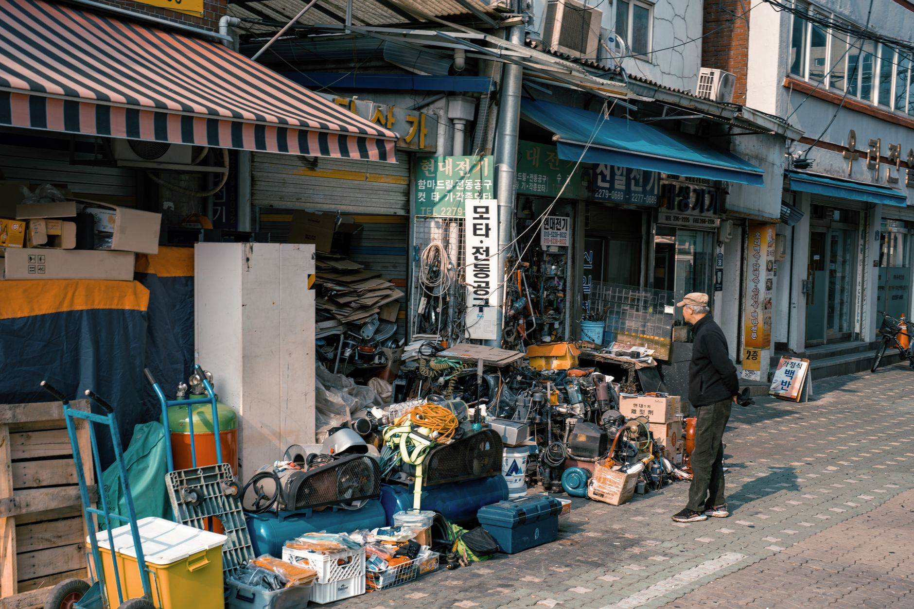

[가이드] 소상공인 일반경영안정자금 완전정복 — 연 4.45%·7천만 원, 대리대출 3단계와 거절 후 수순

정책자금을 검색하다 보면 가장 자주 나오는 이름이 일반경영안정자금입니다. 업력도 매출도 안 따지고 7천만 원까지 5년 만기, 2026년 예산만 1조 2,200억 원이 배정된 최대 규모 자금이라 "정책자금의 기본값"으로 불립니다. 그런데 정작 신청 직전에 막히는 지점은 조건이 아니라 3단계 구조입니다. 소진공 확인서, 보증서, 은행 실행 — 세 개의 문 중 어디에서 막혔는지에 따라 다음 수가 완전히 달라집니다. 이 글에서 조건표·금리·서류·순서·거절 후 수순을 한 번에 정리합니다.
30초 요약
| 누가 | 업력·매출 무관 소상공인 (상시근로자 5인 미만, 제조·건설·운수·광업은 10인 미만) — 제외업종(유흥·향락, 전문업종, 금융, 보험, 부동산 등) 제외 |
|---|---|
| 얼마 | 7천만 원 (정책자금 전체 대출잔액과 합산해 기업당 운전 5억·시설 포함 10억 한도 내) |
| 금리 | 기준금리 3.85% + 가산 0.6%p = 연 4.45% (2026년 3/4분기 기준, 매분기 변동) + 우대금리 최대 0.8%p |
| 기간 | 5년 (거치 2년 포함) — 원금 균등분할상환 |
| 방식 | 대리대출(보증): 소진공 확인서 → 신용보증재단 보증서 → 협약 은행 실행. 온라인 신청 ols.semas.or.kr |
1. 누가 신청할 수 있나
일반경영안정자금의 조건표는 정책자금 13종 중 가장 단순합니다. 업력 요건이 없고, 매출 요건이 없고, 별도 자격 증빙도 없습니다. 소상공인보호및지원에관한법률상 소상공인이면 됩니다 — 상시근로자 5인 미만 사업체(제조·건설·운수·광업은 10인 미만)이고, 제외업종에 해당하지 않으면 신청 자격은 성립합니다.
제외되는 경우는 명확하게 정해져 있습니다. 유흥·향락업, 전문업종, 금융·보험업, 부동산업 등 융자제외 업종(공고 별표 목록)에 해당하면 처음부터 대상이 아니고, 세금 체납이 있어도 융자가 제한됩니다. 단 체납 중이라도 압류·매각 유예, 징수특례, 체납처분 유예가 적용 중이라면 직접대출에 한해 예외가 있으니 해당 상태라면 소진공에 먼저 확인해야 합니다.
그런데 이 단순한 조건표에 함정이 하나 있습니다. "보증기관 심사를 거쳐 대출 취급이 가능한 자"라는 조건입니다. 즉 소진공 문은 누구나 통과하지만, 실제 대출은 신용보증재단의 보증 심사와 은행의 대출 심사를 통과해야 실행됩니다. 자격 요건과 실행 가능성은 다른 문제라는 뜻입니다. 신용에 심각한 문제가 있거나 기존 정책자금 잔액이 한도를 다 채운 사람은 확인서는 나오되 대출까지 못 갈 수 있습니다.
2. 얼마나, 얼마에, 얼마나 오래
한도는 7천만 원입니다. 여기엔 전제가 붙습니다. 정책자금으로 이미 빌린 잔액과 이번에 받을 금액을 합쳐 기업당 운전자금 5억 원(시설자금 포함 시 10억 원)을 넘을 수 없습니다. 즉 신규가 아닌 사람은 "7천만 원 − 기존 정책자금 잔액"이 실제 가용 한도입니다.
금리는 연 4.45% 구조입니다. 2026년 3/4분기 기준금리 3.85%(7월 10일부터 적용, 매분기 변동)에 이 자금의 가산 0.6%p가 붙습니다. 기준금리가 다음 분기에 바뀌면 실행 시점 금리도 함께 움직입니다. 여기에 우대금리로 최대 0.8%p까지 깎을 수 있습니다.
| 우대 유형 | 감면 | 요건 |
|---|---|---|
| 정책우대 | △0.1%p | 컨설팅 수료, 제로페이·디지털 온누리 가맹 |
| 정책배려 | △0.1%p | 여성·장애인기업 등 |
| 사회안전망 | △0.1%p | 고용보험, 화재공제, 풍수해보험, 노란우산 가입 |
| 성실상환 | △0.3%p | 3년 내 10일 이상 연체 없이 분할상환 중 또는 완제 |
| 지역격차해소 | △0.2%p | 비수도권, 수도권 인구감소지역 |
유형 내 중복은 안 되고 우대를 전부 받아도 4.45%에서 0.8%p 깎인 3.65%가 최저선입니다. 사회안전망 항목(고용보험·노란우산·화재공제)은 지금 가입해도 인정되니, 대출 전에 가입 해두는 것만으로 0.1%p가 아끼는 금액을 계산해 볼 가치가 있습니다.
상환 구조는 5년(거치 2년 + 원금 균등분할 3년)입니다. 거치 2년 동안은 이자만 내면 되므로 초기 부담이 낮습니다. 7천만 원 전체를 실행받았다고 가정하면 거치 기간 이자는 연 4.45% 기준 대략 연 310만 원 수준으로 체감하면 됩니다(우대 적용 시 더 낮아집니다).
3. 다른 자금과 무엇이 다른가 — 왜들 이것을 "1순위"라 부르는가
대리대출 창구의 자금은 크게 여섯 갈래로 나뉩니다. 일반경영안정자금은 그중 문턱이 가장 낮은 기본값입니다.
- 소공인특화자금(제조업 10인 미만, 운전 1억·시설 5억, 연 4.45%) — 제조업이면 조건은 비슷하고 한도가 훨씬 큽니다. 제조업을 한다면 일반경영안정이 아니라 이것을 먼저 봐야 합니다.
- 장애인기업지원자금(연 2.00% 고정, 1억) · 청년고용연계자금(연 3.85%, 7천만) — 특정 자격만 있으면 금리가 훨씬 유리한 전용 트랙입니다.
- 긴급경영안정자금(재해 2.00% 고정 1억 / 일시적경영애로 3.85% 7천만) — 재해확인이나 매출 급감 같은 "사유"가 있어야 열리는 별도 자금입니다.
- 대환대출(고정 4.50%, 5년 거치 없음·10년, 5천만 원) — 신규 사업자금이 아니라 기존 고금리 사업자대출을 갈아타는 자금입니다. 금리는 경영안정보다 오히려 높지만 10년 분할로 이자 부담을 깎는 상품입니다.
정리하면: 특별 자격이나 사유가 없고 신규 자금이 필요하면 일반경영안정자금이 1순위이고, 제조업·장애인·청년고용·재해·고금리 대환 중 하나라도 걸리면 그 전용 자금으로 가야 금리·한도에서 이득입니다. 자금이 여러 개 걸린다면 자격이 중복 인정되는지 소진공 콜센터(1533-0100)에 확인하는 편이 안전합니다.
4. 필요한 서류
확인서 신청 단계에서 기본적으로 필요한 서류는 사업자등록증명, 부가세 신고(또는 매출) 관련 서류, 신분증, 그리고 임대차계약서 등 사업장 증빙입니다. 보증서 발급 단계에서는 신용보증재단이 추가로 재무·신용 정보를 수집합니다. 접수 시점에 따라 주민등록등본·건강보험 자격득실 확인서 같은 추가 서류가 요구될 수 있으니 신청 화면의 서류 목록을 그대로 따르는 것이 정확합니다.
서류에서 가장 흔한 실수는 두 가지입니다. 첫째, 사업자등록증의 업종 코드가 실제 업무와 다른 경우 — 제외업종 코드가 붙어 있으면 자동 탈락 사유가 됩니다. 둘째, 4대 보험 가입 근로자 수와 원천세 신고 인원이 불일치하는 경우 — 상시근로자 5인 기준에 영향을 주니 오차가 있으면 정리 후 신청하세요.
5. 신청 순서 — 3단계, 그리고 진짜 병목
- 소진공 확인서 신청 — ols.semas.or.kr에서 온라인 신청. 접수 순서로 처리되고 자금별 예산이 소진되면 마감됩니다. 분기 초에 공고가 열리면 서두를수록 유리합니다.
- 신용보증재단 보증서 발급 — 소진공 확인서를 받아 관할 지역 신용보증재단(또는 신보 중앙회)에 접수하면 보증 심사가 진행됩니다. 전체 절차에서 가장 시간이 걸리는 구간이 여기입니다. 접수 폭주로 보증서 발급까지 수주가 걸리는 시기가 잦습니다.
- 협약 은행에서 대출 실행 — 보증서가 나오면 협약 은행(국민·신한·기업 등)에서 대출 심사를 거쳐 실행합니다. 보증서 유효기간이 정해져 있으니 발급 후 미루지 말고 바로 은행으로 가야 합니다.
6. 떨어졌다면 — 어디로 가야 하나
- 소진공 확인서 단계에서 거절 → 대부분 제외업종·체납·근로자 수 문제입니다. 사유가 업종이면 정책자금은 구조적으로 불가능하고, 체납이면 정리(또는 유예 확인) 후 재도전할 수 있습니다.
- 보증심사 단계에서 거절 → 지역 신보의 일반 보증상품(정책자금이 아닌 일반 보증서 대출)으로 방향을 트면 통과하는 경우가 있습니다. 보증서만 따로 받는 구조라 심사 기준이 다릅니다.
- 신용이 낮은 편 → 신용취약소상공인자금(NCB 839점 이하, 지식배움터 신용관리 교육 사전이수 필수, 3천만 원, 연 5.45%)을 검토하세요. 금리는 높지만 한도와 자격 문이 다른 자금입니다.
- 연체가 낀 상태 → 재도전특별자금의 채무조정형·성실상환 트랙 등 재기 지원 자금이 별도 트랙으로 마련되어 있습니다.
거절 사유 통지는 구두가 아니라 서류로 받으면 어떤 항목에서 막혔는지 확인되고 재신청 전략이 분명해집니다. 같은 조건으로 창구만 바꿔 계속 넣는 건 시간이 아까우니, 첫 거절 직후 소진공 콜센터(1533-0100, 1번)나 중소기업통합콜(1357)에 사유를 먼저 물어보세요.
바로 가기
- 소상공인정책자금 온라인 신청 (ols.semas.or.kr)
- 소상공인시장진흥공단 · 콜센터 1533-0100(1번) / 중소기업통합 1357